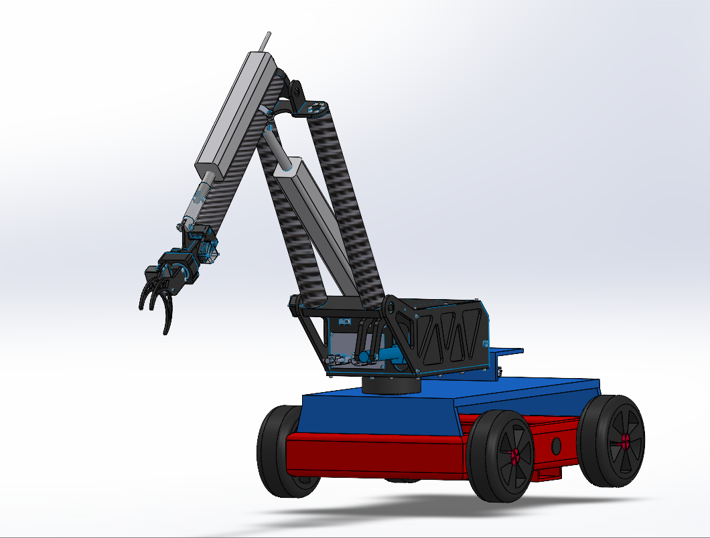
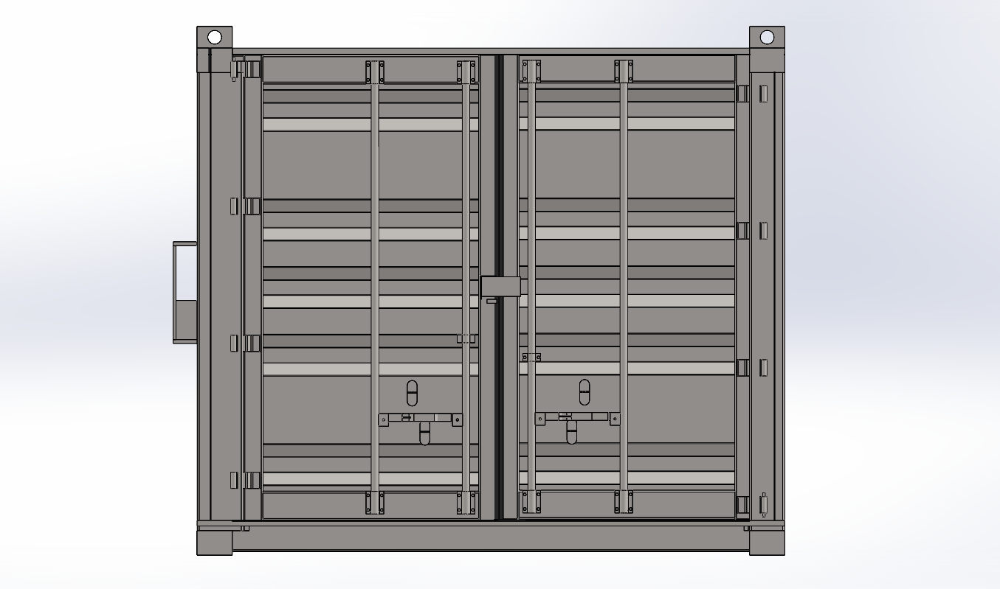
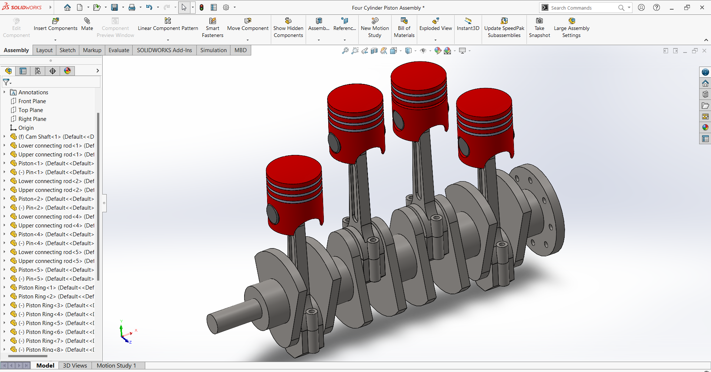
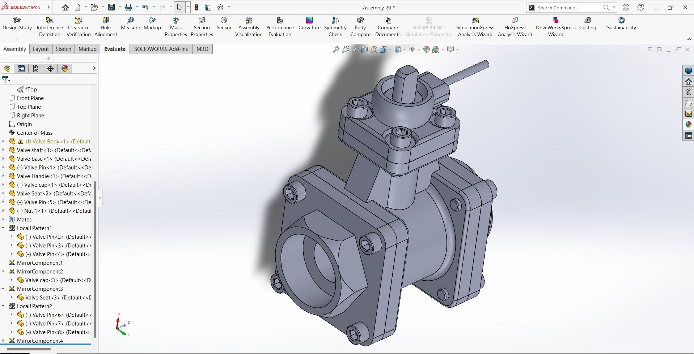

Mechanical Engineering student passionate about CAD design, automation, and innovative mechanical systems.
I am a Mechanical Engineering student at Savitribai Phule Pune University with a strong academic record (CGPA 9.29) and a deep interest in design engineering and industrial innovation. I specialize in CAD modeling, product design, and mechanical system development using tools like SolidWorks, AutoCAD, CATIA, and Fusion 360.
I have hands-on experience through my internship at Ascent Softech Pvt. Ltd., where I worked on CAD modeling, drawing revisions, and data management. Currently, I am developing a Scrap Collector Robot, focusing on automation, sensor integration, and efficient mechanical design for industrial applications.
I am passionate about solving real-world engineering problems and continuously improving my skills in design, simulation, and automation. My goal is to contribute to innovative mechanical solutions and grow as a professional design engineer in the manufacturing and automation industry.

Designed an autonomous robot for collecting metallic scrap using CAD modeling and sensor-based automation.

Designed a 3D model of Solar Storage Container using CAD software.

Designed a 3D model of 4 stroke Engine using CAD software.

Designed a 3D model of Valve using CAD software.
CAD Tools: SolidWorks, AutoCAD, CATIA, Fusion 360, GD&T
CAE Tools: Ansys APDL, Workbench
Programming: Python, MATLAB, HTML, CSS, JavaScript
Ascent Softech Pvt. Ltd. (2024-25)
During my internship, I worked as a Design Engineering Intern where I gained hands-on experience in CAD modeling and industrial design processes. I was actively involved in creating and modifying 3D models, performing drawing revisions, and managing engineering data.
I also worked on tasks such as data migration, diagnostics, parts management, and testing, which helped me understand real-world industrial workflows and product lifecycle management.
This experience strengthened my technical skills in CAD tools like SolidWorks and AutoCAD, while also improving my problem-solving abilities, attention to detail, and teamwork in a professional environment.
You can view or download my resume below:
View Resume Download Resume📍 Solapur, Maharashtra
📞 7821059685
📧 suyashcha3@gmail.com